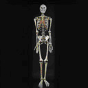

Forensic Anthropology and Forensic Entomology (Bones & Bugs)

Overview
Sometimes, all that is left from a violent crime are the skeletal remains of the victim. Careful analysis of bones can reveal many important clues about the identity and/or the type of injuries that caused the death of a victim. The scientific examination of the skeletal remains from a crime scene is known as forensic anthropology.
A dead body begins to decompose immediately upon death. The rate at which the human body decomposes depends upon the surrounding environment and the micro-environment of the body. If the remains of a victim have been left outside, insects and micro-organisms accelerate decomposition through infestation. Forensic entomology is a specialized field of forensic science in which the analysis and identification of insects found upon a victim’s body can lead to an approximation of the time of death and the cause of death.
The first criminal case in which methods of forensic anthropology were used was in the United States in 1849. Two anatomy professors were asked to examine skeletal remains found in a septic tank and furnace of an anatomy lab where Dr. George Parkman, a missing physician, worked. Analysis of the remains confirmed that the bones were the remains of the missing physician. This information led to the conviction of Dr. John W. Webster, a Harvard chemistry professor, who owed the victim money. Webster had killed and dismembered Parkman rather than pay the debt.
- Byers, Steven N. Introduction to Forensic Anthropology: A Textbook. Allyn & Bacon, 2002. (p. 5)